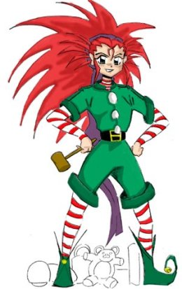

Banner 00
If you wish, feel free to use this banner or any other banners located here to create a link to my site. I would really appreciate it. Thank you!
The Tenchi Muyo Fan Fiction Archive |
||||||
 |
||||||
HAPPY Y2000Hopefully the new millennium brings new joy, not problems. Hello, and welcome to GenSao's Tenchi Muyo Fan Fiction Archive! This is the biggest collection of Tenchi fan fiction on the internet. This site archives any and all fan fiction that is associated with Tenchi Muyo. First time visitors should visit the site format page to understand how this site is organized. . |
||||||
There has been (XXXXXX) visitors to this page. |
||||||
|
||||||
| Update Notice (12/31/1999): |
Happy Holidays! |
Main Menu |
FanFic Archive |
|
Site Resources |
| Regular Fan Fiction Tenchi fan fics that are are Purely Tenchi and that are not lemons, X-overs, or tangents.
Crossover Fan Fiction
Lemon Fan Fiction
Misc Fan Fiction |
Tenchi FanFics Voting Booth Vote here for your favorite Tenchi fanfics. Tell others on what you think is a good story.
Fan Fiction Chat Room
Tenchi Muyo Fan Fiction Mailing List
A Writer's Reference |
|
| Site Information | ||
| Site Format Read this page first if it is your fist visit to tmffa.com.
How to Add a FanFic
Awards Won
Site History
Sponsors |
An introductory fic for this site A short introductory fan fic written by Bglanders.
Links
Copyrights
Credits
Banner Advertisement |
|
| Guestbook | ||
| Sign
The Guestbook I would love to hear from my beloved patrons. Sign my guestbook. |
View
The Guestbook View the many comments people have said about this site. |
| Banner Advertisement | |
|
If you wish, feel free to use this banner or any other banners located here to create a link to my site. I would really appreciate it. Thank you! |
| Last Word | |
| Thank you for visiting this site. I hope you have enjoyed your
visit to Version 4.0 of this site. I will try my best to update this page
at a regular basis. Also I plan on progressively adding things to the archive.
It just depends if I have the time or not.
I will, as always, archive any fics that have been submitted. But, I now ask that you add a short description that may be used as the description for your works. Also, please understand that I can not screen all fics, so if there is a fic that is displaced.. please tell me so that I can fix it. Thanks again for visiting! If you find anything wrong with this page, wish submit any work, praise/bash my site, or would like to ask any questions please do not hesitate to E-mail me.
A Special Note
If you have a problem with a person's work you can do the following:
If I did listen to all the removal request, a few hundred entries would have to be removed. Please understand that I will not remove any stories form the archive just because you find a (particular story/group of stories) offensive. People have different opinions and impressions on stories, thus each person will react differently to a story. What one person hates, another will like. Aldrich "GenSao" Bautista |
|
| Obligatory Ads | |
Guestbook provided by |
Webspace provided by |
Tenchi Muyo is copyrighted by AIC * Pioneer LDC. This site is maintained by GenSao. |
| Moved to tmffa.com on: September 1, 1999 - Version
4.01 Updates: 12/31/1999, 12/20/1999, 11/28/1999, 11/20/1999, 11/7/1999, 10/26/1999, 10/16/1999, 10/4/1999, 9/24/1999, 9/15/1999, 9/9/1999, 9/1/1999, 8/20/1999, 8/17/1999, 8/12/1999, 8/4/1999, 7/29/1999, 7/23/1999, 7/20/1999, 7/13/1999, 7/10/1999, 7/8/1999, 5/30/1999, 5/17/1999, 4/20/1999, 4/13/1999, 4/8/1999, 4/7/1999, 4/6/1999, 4/5/1999, 3/9/1999, 3/6/1999, 3/6/1999, 2/25/1999, 2/23/1999, 2/4/1999, 2/2/1999, 1/27/1999, 1/25/1999, 1/24/1999, 1/19/1999, 1/18/1999, 12/12/1998, 11/28/1998, 11/14/1998, 10/31/1998, 10/17/1998, 10/3/1998, 9/19/1998, 9/5/1998, 8/22/1998, 8/8/1998, 7/25/1998, 7/11/1998, 6/27/1998, 6/13/1998, 5/30/1998, 5/16/1998, 5/2/1998, 4/18/1998, 4/12/1998, 4/4/1998, ... |